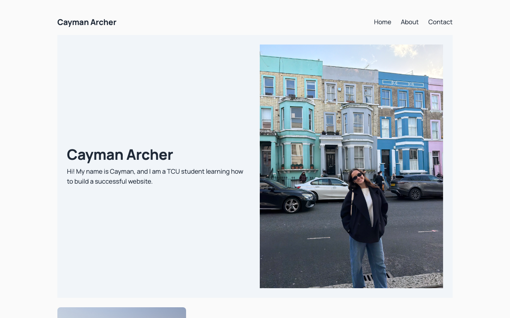
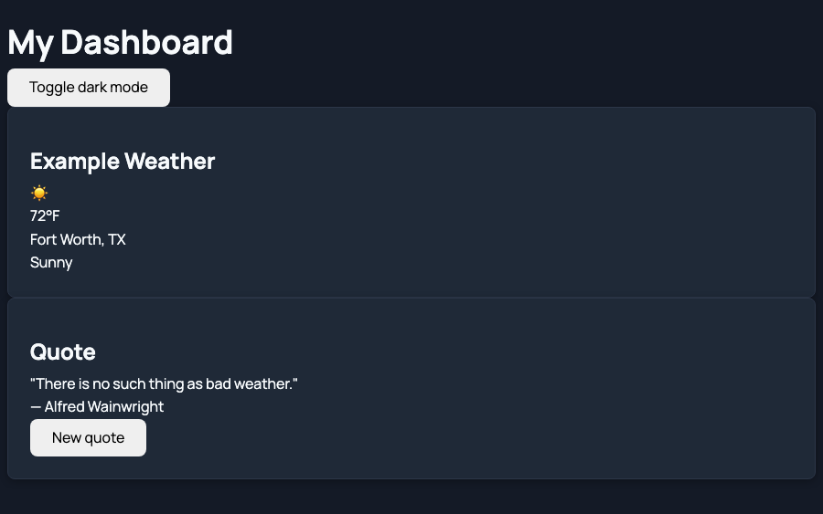
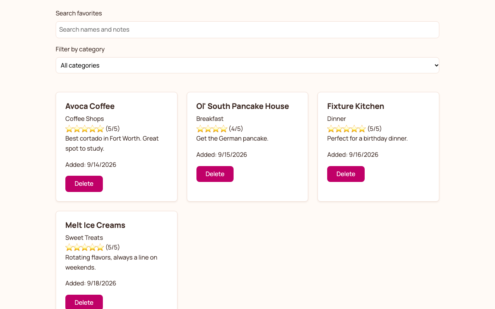
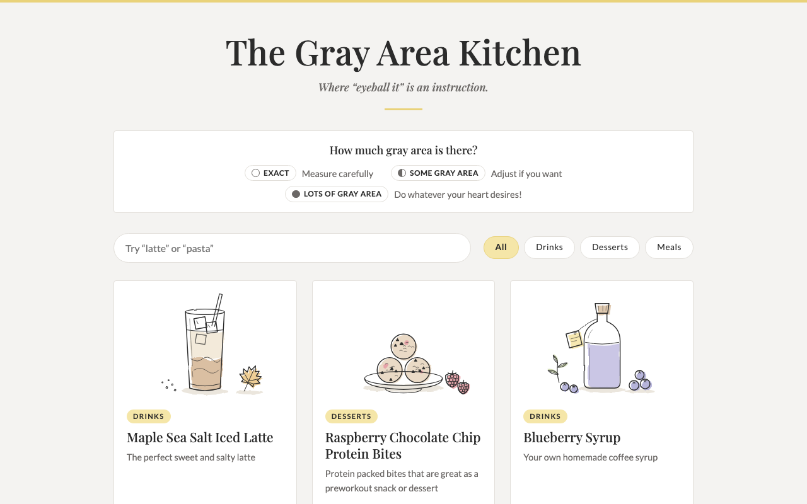
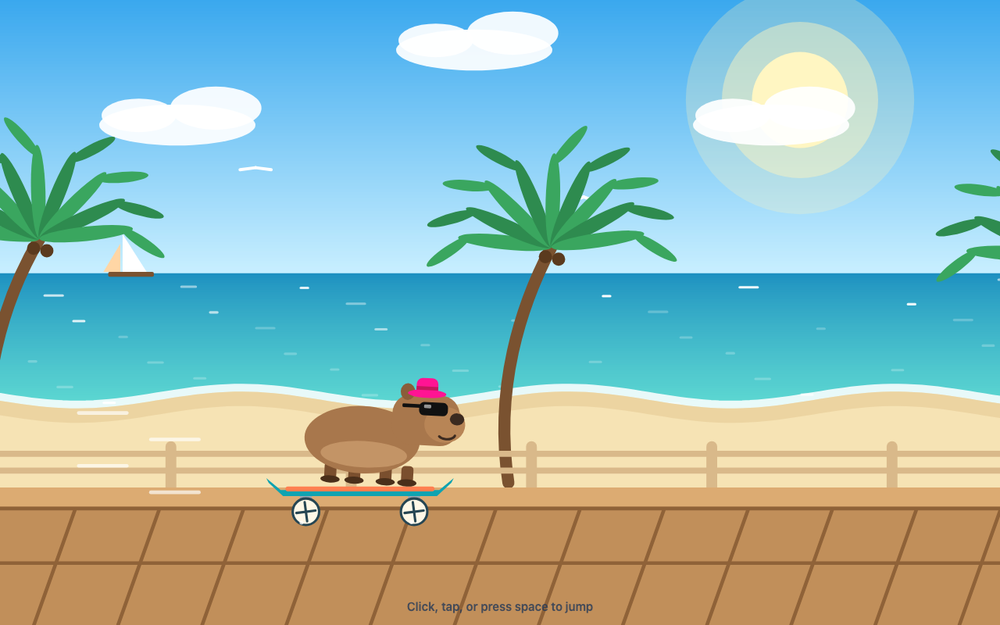

About Me
I am currently a senior at Texas Christian University originally from Las Vegas, NV! I love analyzing data and creating meaningful digital sites.
More About Me →What I Learned
My goals for this course were to feel comfortable making a website on my own, and I wanted to know how to code a site like this without relying on AI. Reflecting on the course, I feel I have achieved this goal successfully with more room to grow. I learned the differences between the different coding languages, when to use each, and what makes a site effective and user-friendly. Accessibility is a major component to websites, and I have learned how to ensure that every one of my sites is accessibile to all users. Overall, this course created a great foundation for my future in coding and website development by showing me what is possible and how I would go about creating it.
My Work
This class has taught me how to successfully code web applications through CSS, JavaScript, and HTML. I have studied Python, R Studio, Tableau, Microsoft Excel, and a variety of other digital tools previous to this class, and this class helped build on my previous knowledge. I have used these tools to visualize data and build insights based on data. Along with that, I have taken several photography classes that have helped me develop my skill of taking effective, beautiful photos. Now I am able to say I can also create functional, accessible, and visually appealing websites.
Skills
-
HTML
Semantic structure, accessible links, captioned figures.
-
CSS
Still learning — starting in Lab 05.
-
Microsoft Excel
Formulas, shortcuts, basic understanding of function.
-
JavaScript
Event handling, basic understanding of functions.
-
VS Code
Code editing, debugging, and extensions.
Projects
-
Personal Portfolio

The site you’re on right now: a personal portfolio I designed and built from scratch with HTML and CSS.
-
Dashboard Site

A Fort Worth dashboard built with HTML, CSS, and JavaScript that shows sample weather and shuffles through weather quotes.
View Site → -
Local Favorites Tracker

A site built for saving your favorite local spots, from coffee shops to sweet treats, with star ratings, notes, search, and category filters.
View Site → -
The Gray Area Kitchen

A recipe site for quick drinks, desserts, and meals that labels each recipe by how much “gray area” it has, from exact measures to eyeballing-it.
View Site → -
Capybara on Skateboard

A playful browser game where a capybara skateboards down a beach boardwalk. Click, tap, or press space to jump.
View Site → -
Barcelona Through My Lens
A photo series from a photography class I took while studying abroad in Barcelona, Spain, capturing my own view of everyday life in the city.
Link Available Soon
Contact
The best way to reach me is by email.
Please reach out if you would like to collaborate!